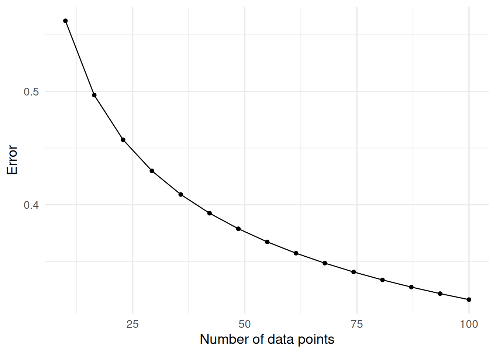
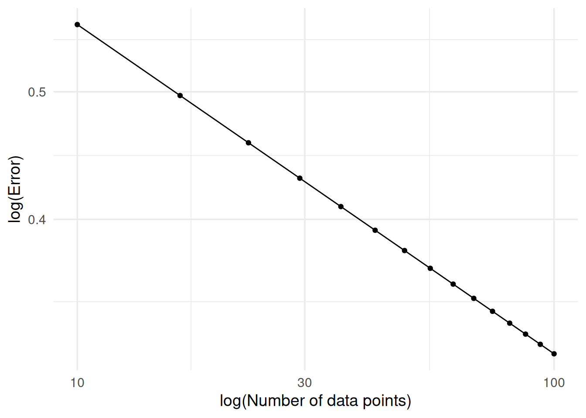

under some model, or some similar bound. In my experience it’s essentially mandatory to explicitly compute \(\left \Vert \hat \theta - \theta \right \Vert\) and check if the estimator actually works, because a surprising amount of the time either things don’t and I get to go through the painful process of ✨ learning ✨.
Also, even when things are working, it can be surprisingly difficult to tell that this is actually the case. Ideally I’d average \(\left \Vert \hat \theta - \theta \right \Vert\) over a bunch of simulations and have a nice estimate of \(\mathbb E \left \Vert \hat \theta - \theta \right \Vert\) that I can plot against \(n\), as below:
library(ggplot2)theme_set(theme_minimal(14))n <-seq(10, 100, length.out =15)alpha <-1/4nice_error <- n^(-alpha)ggplot() +aes(n, nice_error) +geom_line() +geom_point() +labs(x ="Number of data points",y ="Error" )

It turns out that I have horrible intuition about the function \(f(x) = 1 / \sqrt{x}\) though, so I can never tell if a plot like this is showing asymptotic convergence or if there’s some possibility of asymptotic bias. This is especially the case when \(\hat \theta\) is computationally expensive to compute, so I can’t push \(n\) as high as I’d like, such that my smallest error is far from zero.
One thing that helps a lot here is to plot \(\log \left(\left \Vert \hat \theta - \theta \right \Vert \right)\) as a function of \(\log n\), and check if the resulting line has constant negative slope. The idea here is that if \(\left \Vert \hat \theta - \theta \right \Vert \le C n^{-\alpha}\) with high probability, or whatever bound you prove, then \(\log \left(\left \Vert \hat \theta - \theta \right \Vert \right) \le -C \alpha \log n\). So we can just check if things are linear after transformation, and this is easier to do visually.
ggplot() +aes(n, nice_error) +geom_line() +geom_point() +scale_x_log10() +scale_y_log10() +labs(x ="log(Number of data points)",y ="log(Error)" )

This is particularly helpful when working with noisy estimates of some quantity like \(\mathbb E \left \Vert \hat \theta - \theta \right \Vert\). In this setting the untransformed plot can be tricky to read. Here’s an example of noisy estimates that are converging, but you will never convince yourself or a referee that this is the case:
library(patchwork)set.seed(26)error <-abs(rnorm(length(n), mean = n^(-alpha), sd = n^(-2* alpha)))error[1] <-1ggplot() +aes(n, error) +geom_line() +geom_point() +labs(x ="Number of data points",y ="Error" )
when do you need a better estimate of the error, and when do you need to push \(n\) higher. if you can’t push \(n\) higher and you think everything else is right,
laziness in having few reps per \(n\) but actually increasing the reps per \(n\) is better than pushing \(n\) higher. also: increasing the SNR ratio of the simulations.
noisy_log_log <-ggplot() +aes(n, error) +geom_line() +geom_point() +geom_smooth(method ="lm") +scale_x_log10() +scale_y_log10() +labs(x ="log(Number of data points)",y ="log(Error)" )noisy_log_log
`geom_smooth()` using formula = 'y ~ x'
log-log plot here suggests that things are working, just need to turn up the sims per \(n\), instead of increasing \(n\) or the SNR, which would be my normal responses, which at some point i just run out of ram and this no longer works
Converging at some rate, but might need to check the slope to know if it’s converging at your rate.
![]()